What you are installing
Live Counter for OBS puts a big number on your stream that you count up or down live, for example "Hallelujah" shouted 50 times. It runs inside OBS Studio, with nothing to install and no internet needed: a folder of files plus a few clicks, done once. It has three pieces:
- Control panel: a panel inside OBS (a dock) with +1, −1, Undo, Show and Hide.
- Overlay: a transparent Browser Source that shows the number on screen.
- Keyboard shortcuts script: keyboard or Stream Deck shortcuts for the main actions.

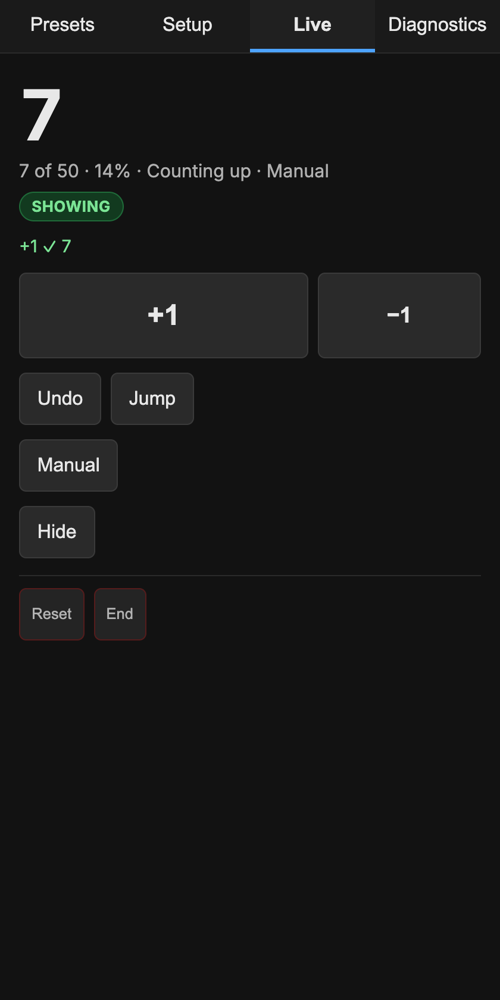

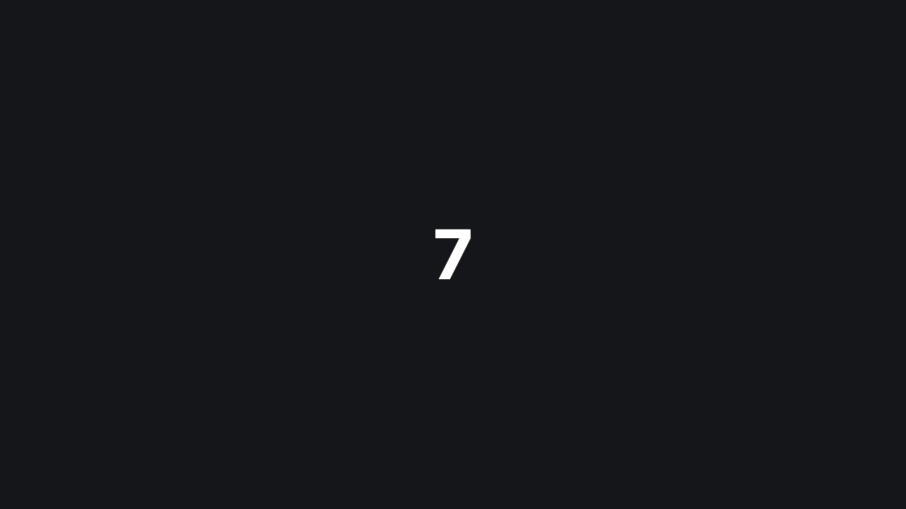
Before you start
- OBS Studio 31 or newer, on Windows or macOS.
- No internet connection is needed at any point.
- The
live-counter-for-obsfolder, copied onto the streaming computer. - About 10 minutes, ideally well before a service.
The pictures on this page come from a Mac running OBS 32. OBS menus are identical on Windows; only file addresses differ.
For developers
If you run from the source repository instead of the shipped folder, the same files live inside dist/.
Step 1
Put the folder somewhere permanent
OBS remembers the folder's exact location, so moving or renaming it later breaks the setup.
- Put the
live-counter-for-obsfolder in Documents. An external drive is fine if it stays connected. - Double-click
setup.htmlin the folder. It opens in your web browser. Keep it open.
The page shows two addresses with Copy buttons: the Dock URL for the control panel and the Overlay URL for the on-screen number. On Windows they start with file:///C:/Users/, on a Mac with file:///Users/. If Copy is blocked, the page highlights the address so you can copy it by hand.

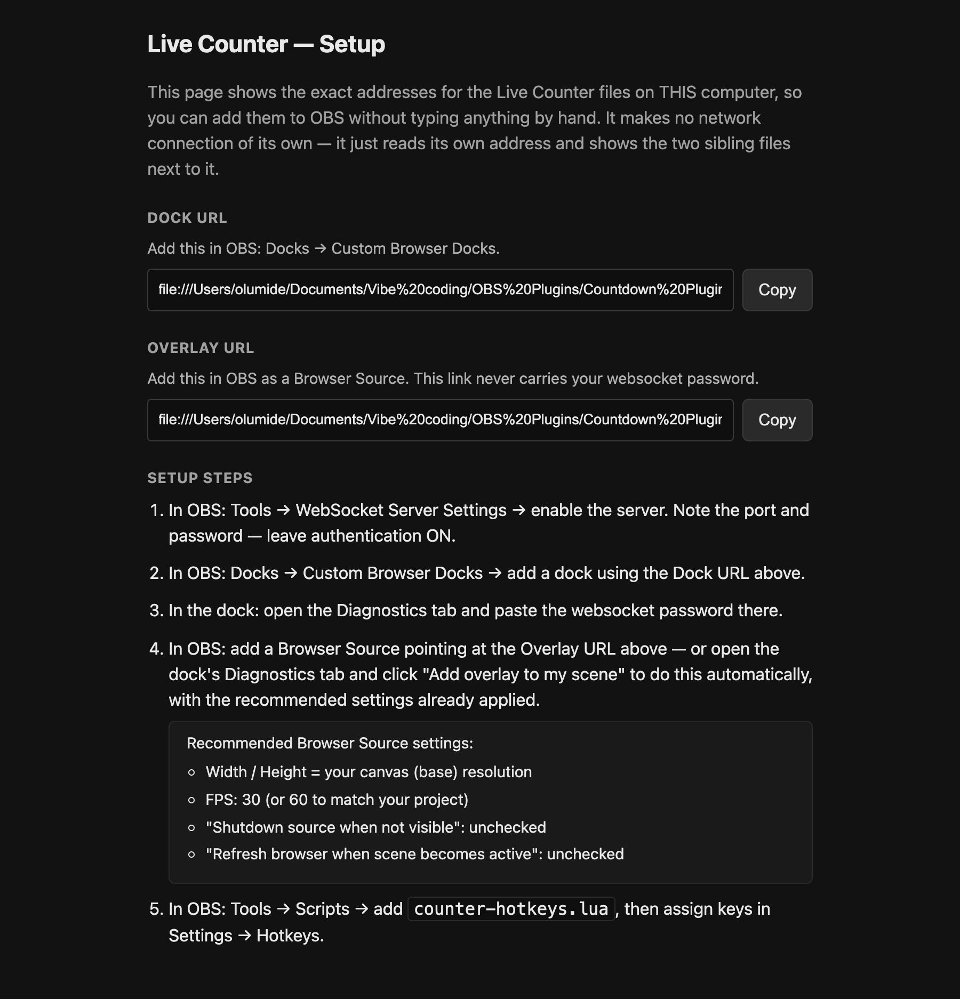
Step 2
Turn on the WebSocket server in OBS
OBS's WebSocket server (a built-in switch that lets the control panel talk to OBS) needs to be on.
- Open Tools → WebSocket Server Settings.
- Tick Enable WebSocket server. Leave Enable Authentication ticked.
- Note the Server Port, usually
4455. - Click Show Connect Info and copy the Server Password, or reveal it in the password field.
- Click Apply, then OK.

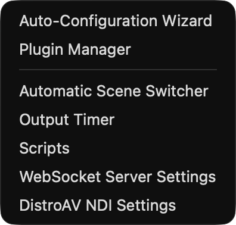

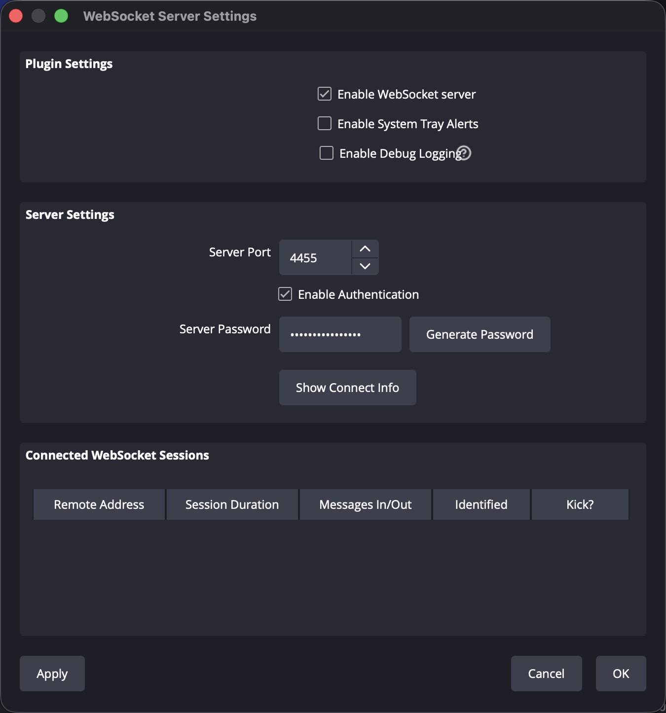
Step 3
Add the control panel
- Open Docks → Custom Browser Docks.
- In an empty row, type
Live Counterunder Dock Name. - Copy the Dock URL from the setup page and paste it under URL.
- Click Apply.
The panel appears as a floating window. Drag it by its title bar to sit beside your other panels.

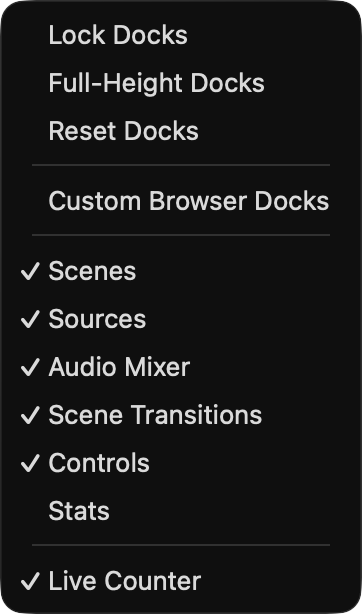

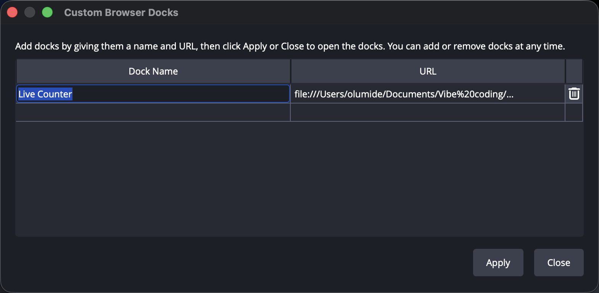
Step 4
Connect the panel to OBS
- In the panel, click the Diagnostics tab.
- Under Settings, check Port matches Step 2.
- Click Paste next to Password.
- Click Save.
The Connection checklist turns green: Storage, OBS WebSocket (showing Connected to OBS) and Transport now, Overlay after Step 5, Hotkeys after Step 6. Any row that is not green names its fix.
Good to know
Even without the password, the panel and the overlay talk to each other directly, so counting still works. The password is what unlocks Add overlay to my scene, the LIVE indicator (showing when you are on air), keyboard shortcuts, and a session backup inside OBS.

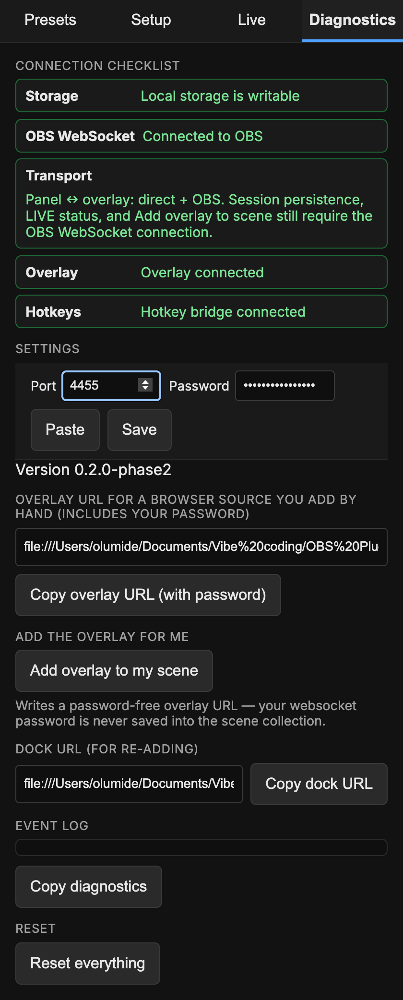
Step 5
Add the overlay to your scene
The easy way
- Select the scene for the counter. The overlay goes into the scene in Program (on air).
- On the Diagnostics tab, click Add overlay to my scene.
The panel shows Overlay added to and your scene name. It creates a Browser Source named Live Counter Overlay with the recommended settings, and never saves your password into it. If an overlay already exists, the button reads Add overlay to this scene or Fix overlay settings instead.

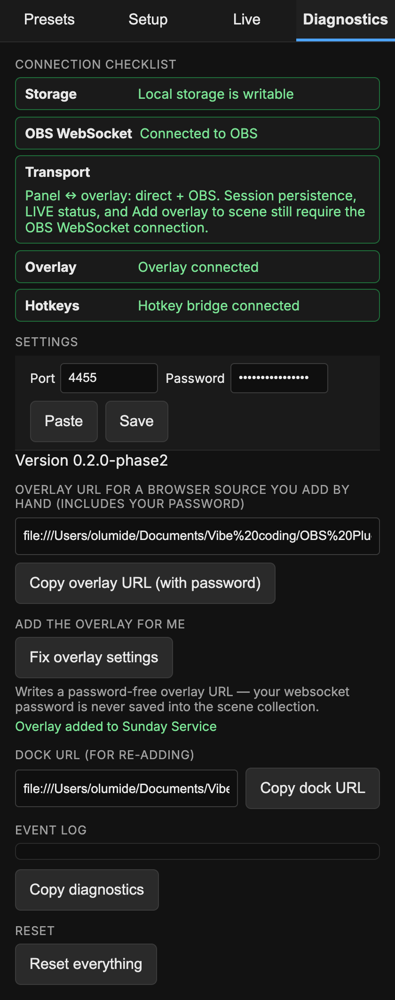
The manual way
- In Sources, click + and choose Browser. Name it
Live Counter Overlayand click OK. (OBS 32 opens an Add Source window; older versions show a short menu.) - In the properties window that opens, paste the Overlay URL into URL. Leave Local file unticked.
- Set Width and Height to your canvas size (Settings → Video → Base (Canvas) Resolution).
- Set FPS to
30, or60to match your project. - Scroll down and untick Shutdown source when not visible and Refresh browser when scene becomes active.
- Click OK.

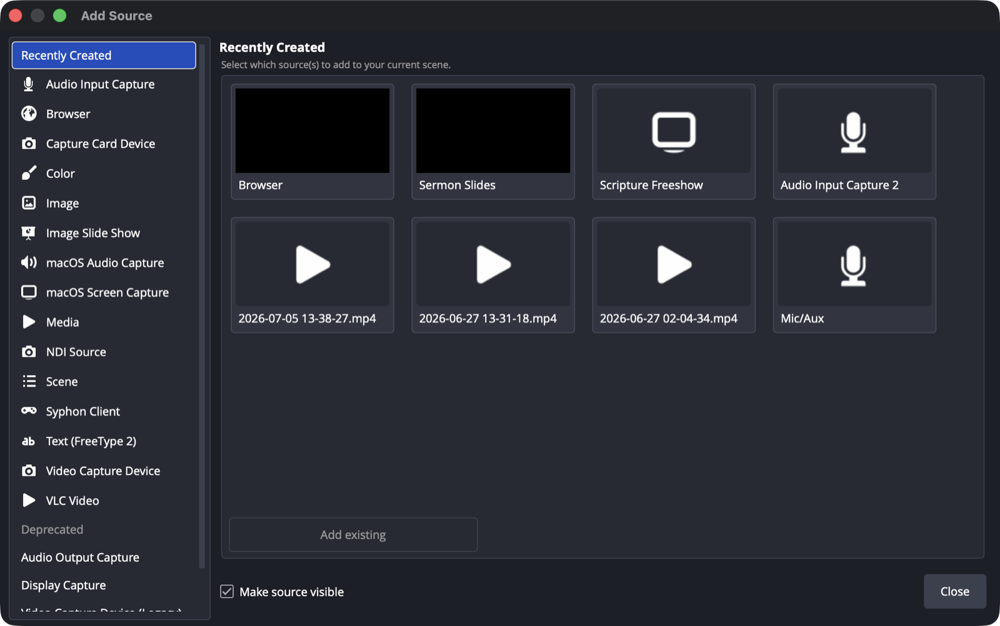

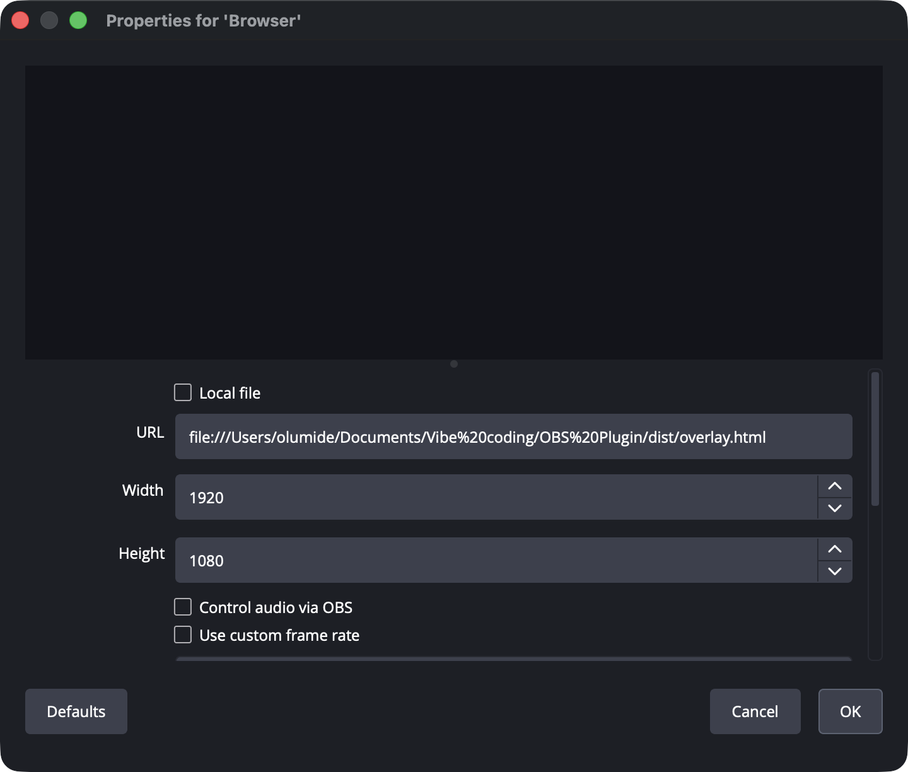
Step 6
Keyboard shortcuts (optional)
- Open Tools → Scripts, click +, and choose
counter-hotkeys.luafrom the Live Counter folder. - Open Settings → Hotkeys and scroll to the five entries starting Live Counter:.
- Click each box, press your keys, then click OK.
Suggested keys. Any combination that OBS is not already using works too.
| Action | Windows | Mac |
|---|---|---|
| +1 | Ctrl + Alt + = | Ctrl + Option + = |
| −1 | Ctrl + Alt + − | Ctrl + Option + − |
| Undo | Ctrl + Alt + Z | Ctrl + Option + Z |
| Pause / Resume | Ctrl + Alt + P | Ctrl + Option + P |
| Show / Hide overlay | Ctrl + Alt + H | Ctrl + Option + H |
Always include a modifier key: a bare key like + can fire while you type elsewhere in OBS. On a Mac, avoid Cmd + H (it hides OBS) and Cmd + Z (OBS's own Undo). Shortcuts need the panel connected (Step 4) and also work through a Stream Deck's OBS integration. The Hotkeys row on the Diagnostics tab turns green within about 30 seconds of adding the script.

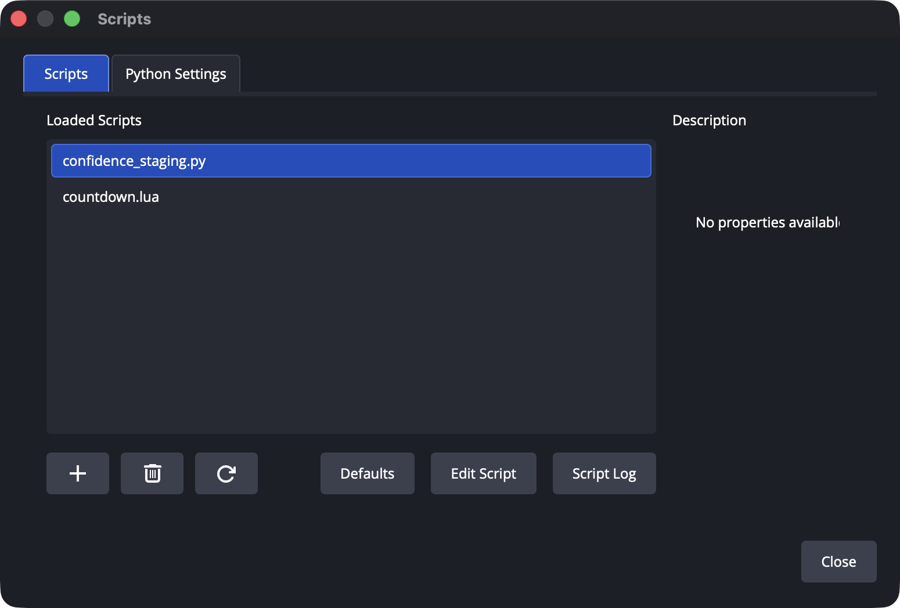
counter-hotkeys.lua once it is added.
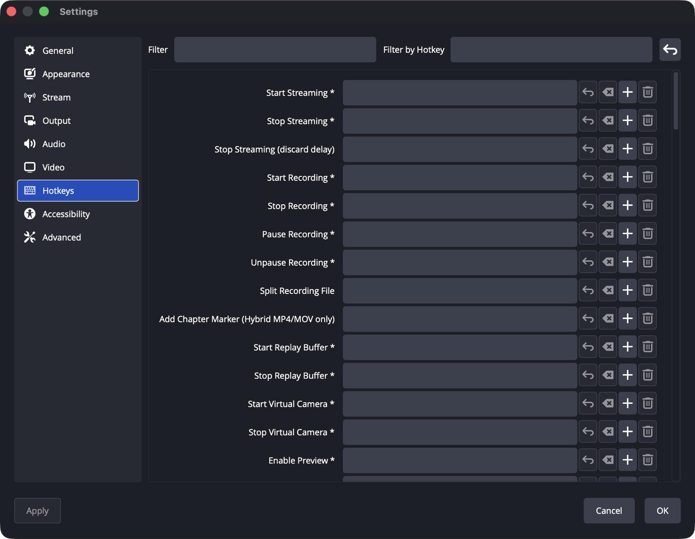
Check that everything works
Tick these off. They stay ticked on this computer so you can come back to them.
Using it on a Sunday
- In Presets, Load or Start a preset. Or set up a count in Setup and click Start session.
- Click Show, then bring the scene to Program as usual.
- Count with +1, −1, Undo and Jump. At either end of the range the count stops. Nothing breaks.
- In Automatic mode, use Start counting, Pause, Resume, Faster, Slower and Reverse.
- Finish with Hide, or End and then End, keep overlay or End, hide overlay.
While the counter is live on air, your first Show, Reset or Jump in each session asks you to confirm.

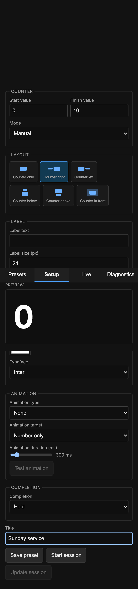

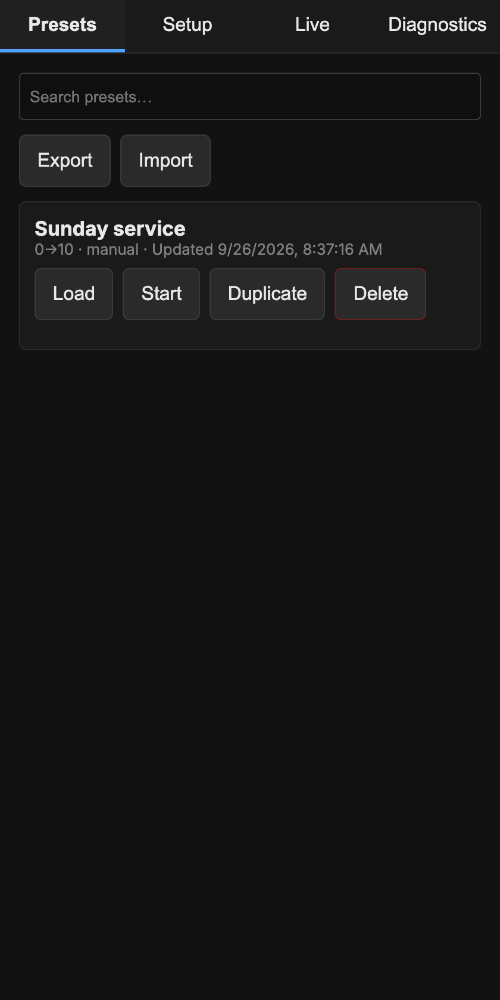
Moved the folder?
If the folder moves or is renamed, the panel shows Couldn't load that page with File not found, the overlay goes blank, and shortcuts stop. To fix it:
- Open
setup.htmlfrom the folder's new location. - In Docks → Custom Browser Docks, replace the Live Counter URL with the new Dock URL. Click Apply.
- Right-click Live Counter Overlay in Sources, choose Properties, paste the new Overlay URL into URL, and click OK.
- In Tools → Scripts, remove
counter-hotkeys.luawith − and add it again with +. Reassign any missing keys.
Presets are kept by OBS itself, not in the folder, so they normally survive a move. To be safe, Export them from the Presets tab first.

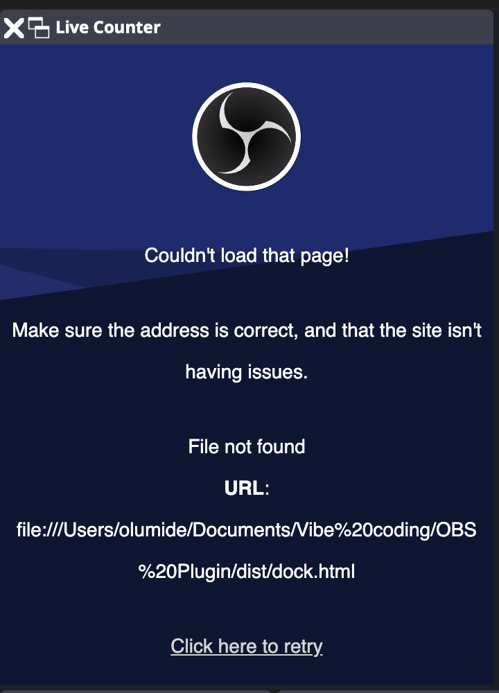
If something goes wrong
- Panel frozen. Right-click it and choose Reload, or reopen it from Docks. The count is kept.
- OBS crashed or restarted. The panel restores your session, paused, so you can check the number first.
- OBS asks "Are you sure you want to exit?" That is OBS's normal question. Your session is saved, so it is safe to confirm.
- OBS WebSocket row not green. Check the server is on and the port matches. For a wrong password, copy it again from Show Connect Info, then Paste and Save.
- Overlay not seen. Add the overlay (Step 5), or check that its scene is loaded.
- Hotkey bridge silent. Add
counter-hotkeys.luaagain in Tools → Scripts. - Still stuck. Click Copy diagnostics on the Diagnostics tab and send it to whoever helps you.
Last resort
Reset everything on the Diagnostics tab deletes every setting, preset, session and log on this computer after you confirm. It cannot be undone.
Moving to another computer
Copy the folder to a permanent home on the new computer and repeat Steps 1 to 6. Addresses differ on every computer, and setup.html always shows the right ones.
Presets do not travel with the folder. On the old computer, click Export in Presets and paste the result into a text file you can carry across. On the new one, copy that text, then click Import, Paste and Apply.